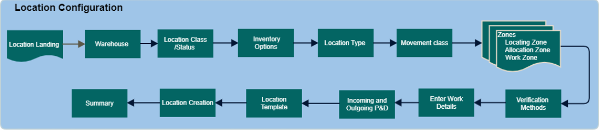

Locations are physical spaces where inventory is placed. This enables the system to always track and locate the items while it is in the warehouse.

Select the warehouse that will contain the locations.
Location Class - define the purpose of the location in relation to product. Read Location Class Field for more information.
Status - Select the location in Frozen state or not.
Configure the Location properties, Maximum number of lots, and real-time replenishment selection.
Inventory Options are the following.
Allocate in Transit - When selected, the system will include 'In Transit' quantity when calculating the available quantity at the location.
If you do not select this value, the system will use the normal computation (on hand - allocated - suspense).
If you select this value, the system will include the "in transit" quantity in the allocation computation (on hand + in transit - allocated - suspense). In this case, then, an allocation can potentially occur for an amount that is greater than the "on hand" quantity.
Multi Item Location- Select to store more than one item(s) at the location.
Track License Plates - Track item quantity at the license plate level. Note that you cannot track license plates on a location that has a location class of Receiving Pre-Check In or Shipping Dock.
Max Number of Lots - The value limits the number of different Lot ID's that the system can place into this location. Note that a value of zero ("0") in this field indicates that the system will place no limits on how many lots are allowed in a location. Note that multi item locations determine the maximum number of lots per item in the location. In other words, every different item present in the location will have its own individual maximum number of lots value.
Max Number of License Plates - The value limits the number of license plates (LPs) that the system can place into this location. A value of zero ("0") indicates that the system will place no limit on the number of LPs allowed in the location. For details about how LPs are counted and validated, see Maximum Number of License Plates in a Location.
Does this location use real time Replenishment? - Selecting Yes indicates that you want to make this location eligible for real time replenishment (inventory storage locations only).
This defines the physical dimension of the location. Examples of common location types are carton flow and rack. Read Location Type Configuration.
The movement class value indicates how often inventory is moved (shipped) out of the warehouse; for example, fast movers or slow movers.
These values are used to indicate what general part of the warehouse the location resides in. These zones in turn are used by the locating, allocation, and work creation/execution processes:
Locating Zones -Locations that share same locating requirements. Read Locating Zone Configuration.
Allocation Zone - Locations that share the same allocation requirements. Read Allocation Zone Configuration.
Work Zone - Locations that share the same work teams and equipment types. Read Work Zone Configuration.
Select the default verification method and check digit generation.
Verification methods
None - System does not require users to verify that they are at the correct location.
Check Digit - User will have to provide the location's check digit value.
Location - User will have to Verify the location ID.
Check Digit Generation
Check digit value - Enter a value if you want define the location's check digit. This value is for single location and not for range of locations.
Generate Check digit - toggle to system to generate check digit value.
This screen allows you to define various work-related values: Picking Sequence, Putaway Sequence, and Vector Coordinate.
Picking Sequence - Identifies the order that the system generates picking work instructions for this location. It is a numeric value. Picking sequences are optional, not required. These can be used to during work creation.
Putaway Sequence - Identifies the order that the system generates putaway work instructions for this location. It is a numeric value. Putaway sequence are optional, not required. These can be used during work creation.
Select "Do you want to allow work unit selection on system-directed work” as Yes or No.
When Yes is selected it indicates that this location will be eligible for work unit selection when initiating system-directed work. When a user scans the location that they are currently at (on the system-directed work initiation screen), the system will identify some appropriate work to assign. When this work is assigned, the system will display an additional system-directed initiation screen, which allows the user to scan any work unit at the current location.
Users can identify what unit of measures can be allocated or located from this location or range. You can select more than one unit of measure. The system will only allocate/locate product in the units of measure that you define.
Note: If you do not select an UM values, the system will assume that all UMs can be allocated/located from this location.
These values represent the incoming/outgoing P&D that are associated with this location.
These templates determine what the structure of the location’s ID, such as how many digits it has, if it is alpha or numeric, and if there is a separating character between each segment.
Create one-to-many location records. The system displays the user’s the previously-selected location template.
Starting and Ending Location- Use these to indicate the beginning and ending ID segments for the location(s) that you want to create. The system will create locations starting with the Starting Location ID and continue to create locations incrementally (as defined in the Increment field) until the Ending Location value is reached. If you want to create a single location, enter the same value in both of these fields.
When you have entered your range IDs, press the Add To Locations Grid button to have the system populate the preview grid on the right side of the screen with the location(s) that you have defined. At this point, the location record(s) have not been created in the database yet, they are simply there to make sure that you have built your ranges correctly. Note that you can add multiple ranges to the preview grid (from the same or different warehouses).
When you are satisfied with your location range(s), press the Continue button, and the system will proceed to the summary screen.
Note
Location Ranges - To minimize setup time, create a range of locations instead of single locations. Since you can create locations in ranges, you can also edit an entire range at one time. To edit a location range, open one record within that range.
Deleting Locations - You cannot delete a location record when transactions is associated with the location. Only after completing the transaction process, the system will allow a location to be deleted.